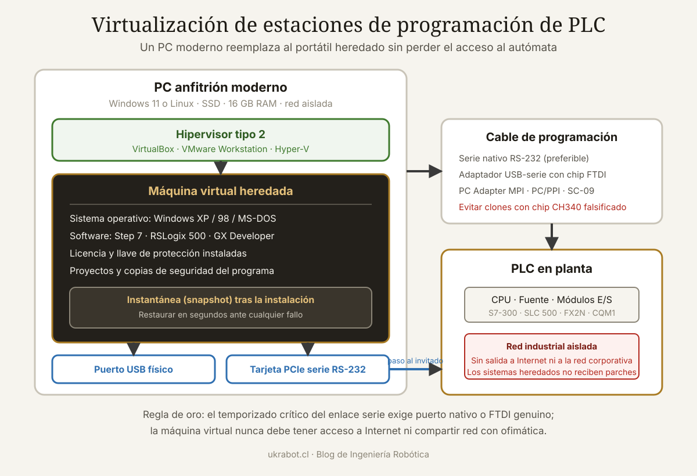

Qué cubre esta guía
- Qué está realmente obsoleto en tu instalación
- Qué se virtualiza y qué no
- Elegir el hipervisor adecuado
- Instalar el sistema heredado paso a paso
- Licencias: la parte que no se puede improvisar
- El puerto serie: el punto más delicado
- Respaldar los programas antes de que sea tarde
- Aislamiento y seguridad del entorno virtualizado
- Cuándo dejar de parchear y migrar
- Conclusión
- Preguntas frecuentes
Qué está realmente obsoleto en tu instalación
Antes de gastar un peso, conviene separar tres cosas que se suelen confundir bajo la etiqueta "el PLC es viejo":
| Componente | Vida útil típica | Estado habitual a los 25 años | ¿Virtualizable? |
|---|---|---|---|
| CPU del PLC | 20 a 40 años | Funcionando sin problemas | No hace falta |
| Módulos de E/S | 20 a 30 años | Funcionando; fallos puntuales de canal | No hace falta |
| Batería de memoria | 3 a 5 años | Agotada o a punto | No: hay que reemplazarla |
| PC de programación | 5 a 8 años | Muerto o irreparable | Sí |
| Sistema operativo | 10 a 15 años de soporte | Sin soporte desde hace años | Sí |
| Software de programación | Ligado al SO | No instala en sistemas modernos | Sí |
| Puerto serie / paralelo | Obsoleto en hardware nuevo | Inexistente en PC actuales | Parcialmente, con adaptador |
| Tarjeta propietaria ISA/PCI | Obsoleta | Sin repuesto | No |
La conclusión es casi siempre la misma: el autómata está bien; lo que se murió es todo lo que había alrededor para hablarle. Los PLC de gama industrial se diseñaron para décadas de servicio continuo y suelen cumplirlo. La informática de escritorio que los acompañaba no.
Qué se virtualiza y qué no
Un error de concepto frecuente: no vas a virtualizar el PLC. El autómata sigue siendo hardware físico ejecutando su programa en la planta. Lo que virtualizas es el entorno de programación: el sistema operativo antiguo y el software del fabricante que necesita ese sistema para funcionar.
Casos que la virtualización resuelve bien
- Software que exige Windows XP, 2000, 98 o MS-DOS y no instala en Windows 10 u 11.
- Programas que dependen de bibliotecas de 16 bits, eliminadas en Windows de 64 bits.
- Aplicaciones que fallan por comprobaciones de versión del sistema operativo.
- Entornos que necesitan estar congelados: una máquina virtual se puede clonar y restaurar a un estado conocido en minutos.
- Consolidar varios entornos de distintos fabricantes en un solo portátil de servicio.
Casos que la virtualización NO resuelve
- Tarjetas de interfaz propietarias ISA o PCI. No hay forma de pasar una tarjeta ISA a una máquina virtual moderna. Aquí necesitas conservar un PC físico de época o buscar un convertidor de protocolo.
- Llaves de protección (dongles) en puerto paralelo. Las de USB suelen pasarse sin problema; las de paralelo, casi nunca.
- Software con temporización crítica a nivel de microsegundos sobre el puerto. La capa de virtualización añade latencia variable.
- Baterías agotadas, condensadores secos o módulos de E/S quemados. Son problemas físicos y requieren solución física.
Elegir el hipervisor adecuado
| Hipervisor | Coste | Paso de puerto serie | Paso de USB | Soporte de SO antiguos | Recomendación |
|---|---|---|---|---|---|
| VirtualBox | Gratuito (GPL) | Sí, muy configurable | Sí (con extensiones) | Muy bueno | La mejor primera opción |
| VMware Workstation Pro | Gratuito para uso personal | Sí, muy robusto | Excelente | Excelente | Mejor estabilidad USB |
| Hyper-V | Incluido en Windows Pro | No | Limitado | Regular | Descartar para este uso |
| QEMU / KVM | Gratuito | Sí | Sí | Bueno | Para anfitriones Linux |
| PCem / 86Box | Gratuito | Sí | Limitado | Emulación completa de PC de época | Para DOS y tarjetas ISA emuladas |
Hyper-V queda descartado por un motivo decisivo: no ofrece paso de puertos serie físicos a la máquina invitada, que es justamente lo que necesitas. Peor aún, si activas Hyper-V en Windows, este se apodera del hardware de virtualización y degrada el rendimiento de VirtualBox y VMware. Desactívalo si vas a usar otro hipervisor.
Para MS-DOS y software realmente antiguo, 86Box merece mención aparte: no es un hipervisor sino un emulador de PC completo que recrea placas base, chipsets y tarjetas de época, incluyendo ranuras ISA emuladas. Es más lento, pero resuelve casos que ningún hipervisor moderno puede.
Instalar el sistema heredado paso a paso
Recursos que conviene asignar
| Sistema invitado | RAM | Disco virtual | Núcleos | Nota |
|---|---|---|---|---|
| MS-DOS 6.22 | 32 MB | 2 GB | 1 | Más RAM no ayuda: DOS no la usa |
| Windows 98 SE | 256 MB | 8 GB | 1 | Falla al arrancar con más de 512 MB |
| Windows 2000 | 512 MB | 20 GB | 1 | Muy estable virtualizado |
| Windows XP SP3 | 1 a 2 GB | 40 GB | 1 o 2 | El caso más habitual |
| Windows 7 de 32 bits | 2 GB | 60 GB | 2 | Para software de los 2010 |
Un detalle contraintuitivo: asignar demasiada memoria puede impedir el arranque. Windows 98 tiene un fallo conocido con más de 512 MB de RAM. Y asignar más de un núcleo a sistemas monoprocesador antiguos suele provocar inestabilidad. Menos es más.
Secuencia recomendada
- Crea la máquina virtual con disco de tamaño fijo, no dinámico: es más rápido y menos propenso a corrupción.
- Instala el sistema operativo desde la imagen ISO original.
- Instala las Guest Additions (VirtualBox) o VMware Tools. Mejoran el video, el ratón y las carpetas compartidas.
- Desactiva las actualizaciones automáticas y cualquier servicio de red innecesario. Este sistema no debe tocar internet.
- Toma una instantánea limpia y llámala "SO recién instalado". Este es tu punto de retorno.
- Instala el software del fabricante del PLC y sus controladores.
- Configura la comunicación y verifica que conecta con el autómata.
- Toma una segunda instantánea: "Entorno funcionando". A partir de aquí, cualquier experimento es reversible.
- Exporta la máquina completa a un archivo OVA y guárdalo en dos lugares distintos.
Licencias: la parte que no se puede improvisar
Virtualizar no cambia las condiciones de licencia. Un sistema operativo instalado en una máquina virtual necesita su propia licencia válida, igual que en hardware físico.
- Windows XP, 2000 y 98 ya no se venden, pero las licencias OEM o retail que poseas legalmente siguen siendo válidas. Conserva la etiqueta con la clave del equipo original que estás reemplazando.
- La activación telefónica de Windows XP dejó de operar. Las claves de volumen (VLK) no requieren activación, y son las que se usan habitualmente en entornos industriales con licenciamiento corporativo.
- El software del fabricante del PLC suele estar ligado a una llave de hardware o a un identificador del equipo. Consulta al fabricante antes de mover la licencia: muchos ofrecen transferencia gratuita o programas específicos de continuidad para instalaciones antiguas.
- Documenta todo: facturas, claves, números de serie y contratos. En una auditoría, la carga de la prueba es tuya.
El puerto serie: el punto más delicado
Aquí es donde fracasan la mayoría de los intentos. La cadena completa tiene cuatro eslabones y cualquiera puede romperla.
1. El adaptador USB a serie
No todos son iguales, y la diferencia es enorme. Los chipsets clonados que abundan en el comercio informal fallan de formas sutiles: pierden bytes bajo carga, no respetan los tiempos entre tramas y, en algunos casos, los propios controladores oficiales los deshabilitan al detectar que son falsificaciones.
| Chipset | Fiabilidad | Comentario |
|---|---|---|
| FTDI FT232R genuino | Excelente | La opción recomendada; controladores maduros en todos los sistemas |
| Prolific PL2303 genuino | Buena | Funciona, pero los modelos antiguos carecen de controlador para Windows moderno |
| Silicon Labs CP2102 | Buena | Correcto para la mayoría de usos |
| CH340 / CH341 | Aceptable | Válido para Arduino; poco fiable para protocolos industriales |
| Clones de FTDI | Mala | Fallos intermitentes; evitar por completo |
2. El paso a la máquina virtual
Existen dos formas de que el sistema invitado vea el puerto, y elegir bien importa:
- Paso del dispositivo USB completo (recomendado): el hipervisor entrega el adaptador USB entero a la máquina virtual, que instala su propio controlador y crea su COM. Es la opción más transparente y la que menos problemas de temporización da.
- Paso del puerto COM del anfitrión: el anfitrión instala el adaptador y expone su COM a la máquina virtual. Añade una capa intermedia y suele ser el origen de los problemas de tiempo.
Configuración en VirtualBox (paso de USB completo):
1. Instalar el Extension Pack de VirtualBox
2. Máquina apagada → Configuración → USB
3. Habilitar controlador USB 2.0 (EHCI)
4. Añadir filtro con el adaptador conectado
5. Arrancar la máquina virtual
6. Dentro del invitado, instalar el controlador del fabricante del chipset3. La configuración de comunicación
El número de COM que el software espera puede no coincidir con el que el sistema asignó. En Windows, el Administrador de dispositivos permite cambiarlo: Propiedades del puerto → Configuración de puerto → Opciones avanzadas → Número de puerto COM. Muchos programas antiguos solo aceptan COM1 a COM4, así que fuerza uno de esos.
Los parámetros deben coincidir exactamente con los del PLC. Los más habituales en autómatas clásicos:
Ejemplos de configuración típica (consulta siempre el manual):
9600 baudios, 7 bits de datos, paridad par, 1 bit de parada
19200 baudios, 8 bits de datos, sin paridad, 1 bit de parada
Control de flujo: normalmente ninguno o RTS/CTS
Diagnóstico de conexión física:
Puentea RX y TX en el conector del cable.
Si un terminal serie muestra en pantalla lo que escribes,
el adaptador y el cable funcionan; el problema está más allá.4. El cable de programación
Muchos PLC no usan RS-232 estándar sino niveles TTL, RS-485 o protocolos propietarios con conversión activa dentro del propio cable. Un cable genérico "compatible" que no incluya esa electrónica no funcionará jamás, por muy bien configurado que esté todo lo demás. Verifica qué convierte exactamente el cable original.
Respaldar los programas antes de que sea tarde
Una vez que consigues comunicarte con el autómata, la prioridad absoluta es extraer y conservar el programa. Este es el momento del proyecto que realmente reduce el riesgo del negocio.
- Sube el programa completo desde el PLC al software, incluyendo la configuración de hardware y los parámetros de los módulos.
- Guárdalo en el formato nativo del fabricante, con nombre y fecha claros.
- Expórtalo además en formato legible (texto, PDF o listado impreso de la lógica escalera). Los formatos nativos dependen de un software que quizás no puedas ejecutar dentro de veinte años; un PDF con el diagrama de contactos lo leerá cualquiera.
- Documenta la tabla de E/S: qué hace cada entrada y cada salida en la máquina real. Esta información casi nunca está en el programa y es la más difícil de reconstruir.
- Guarda tres copias en lugares distintos: el portátil de servicio, un servidor de la empresa y un medio externo fuera de la planta.
- Verifica la copia restaurándola en la máquina virtual y comparándola con la original. Una copia que nunca se ha probado no es una copia.
Aislamiento y seguridad del entorno virtualizado
Estás ejecutando un sistema operativo que lleva más de una década sin parches de seguridad. Tratarlo como un equipo normal sería temerario.
- Red desconectada por defecto. En la configuración de la máquina virtual, deja el adaptador de red desconectado o en modo "solo anfitrión". El sistema invitado no necesita internet para programar un PLC.
- Intercambio de archivos por carpeta compartida del hipervisor, no por red. Y analiza con un antivirus del anfitrión todo lo que pase a esa carpeta.
- El anfitrión sí debe estar actualizado y protegido. Es la barrera real.
- Nada de navegar ni leer correo desde el sistema invitado. Nunca.
- Segmenta la red industrial. Si el PLC está en una red Ethernet, debe estar en un segmento separado de la red ofimática, con un cortafuegos entre ambas. Este principio es el mismo que rige la integración de brazos robóticos con PLC en celdas modernas.
- Instantáneas frecuentes. Ante cualquier comportamiento raro, restaura y sigue trabajando. Es la ventaja fundamental de tener el entorno virtualizado.
Cuándo dejar de parchear y migrar
La virtualización compra tiempo, y a veces mucho. Pero llega un punto en que sostener el sistema antiguo cuesta más que reemplazarlo. Señales objetivas de que ese momento llegó:
| Señal | Gravedad | Acción |
|---|---|---|
| No se consiguen repuestos ni en el mercado de segunda mano | Alta | Planificar reemplazo con presupuesto |
| El programa no se puede leer (protegido o batería muerta) | Crítica | Ingeniería inversa o migración inmediata |
| Nadie en la empresa sabe cómo funciona la lógica | Alta | Documentar ahora; migrar después |
| Fallos intermitentes de E/S cada vez más frecuentes | Alta | El hardware está llegando al final |
| Se necesitan funciones nuevas que el PLC no soporta | Media | Evaluar migración con nuevas prestaciones |
| Requisito normativo de trazabilidad o conectividad | Media | Migrar o añadir pasarela de datos |
| Solo funciona, pero funciona bien | Baja | Virtualizar, respaldar y seguir operando |
Una estrategia intermedia muy razonable es mantener el PLC y añadir una pasarela: un pequeño equipo que lea el estado del autómata por su puerto serie y lo publique por MQTT o Modbus TCP hacia sistemas modernos de supervisión. Consigues visibilidad y datos sin tocar la lógica probada durante décadas. Quien quiera profundizar en la lógica de programación de estos equipos encontrará útil la guía de programación de PLC para robótica.
Conclusión
Un PLC de veinticinco años que sigue funcionando no es un problema: es una inversión amortizada que continúa produciendo. El problema es la infraestructura informática que lo rodea, y esa sí se puede reconstruir con virtualización a un coste ridículo comparado con una migración completa.
El orden correcto de las tareas es innegociable: primero la batería, después el respaldo del programa, luego la documentación de las entradas y salidas, y solo entonces la máquina virtual. Muchos proyectos empiezan por lo divertido —montar la VM— y descubren tarde que el programa se perdió porque la pila llevaba tres años agotada.
Cuando tengas el entorno funcionando, exporta la máquina virtual completa y guárdala como el activo crítico que es. Ese único archivo puede ser la diferencia entre una parada de dos horas y una de dos semanas el día que algo falle.
Preguntas frecuentes
¿Puedo virtualizar el PLC en sí, sin el hardware físico?
No en el sentido general. Algunos fabricantes ofrecen simuladores de sus propios autómatas para pruebas de lógica, pero solo ejecutan el programa: no tienen entradas ni salidas reales, ni cumplen los tiempos de ciclo del equipo físico. Sirven para depurar la lógica antes de bajarla al PLC, no para sustituirlo en producción. Lo que se virtualiza en esta guía es el entorno de programación, no el autómata.
¿Por qué mi adaptador USB a serie no funciona con el software antiguo?
Las causas más frecuentes, en orden: el número de COM asignado está fuera del rango que acepta el software (fuérzalo a COM1-COM4 desde el Administrador de dispositivos), el chipset es un clon poco fiable (usa un FTDI genuino), el adaptador se pasó a la máquina virtual como puerto COM del anfitrión en lugar de como dispositivo USB completo, o los parámetros de comunicación no coinciden con los del PLC. Prueba también puenteando RX y TX para confirmar que el adaptador y el cable están sanos.
¿Es legal usar Windows XP en una máquina virtual?
Sí, siempre que poseas una licencia válida para esa instalación. Que Microsoft haya terminado el soporte no invalida las licencias existentes. Lo que no es legal es descargar imágenes o claves de sitios no autorizados. Conserva la documentación de la licencia original del equipo que estás reemplazando, y ten presente que un sistema sin parches debe operar aislado de la red por motivos de seguridad, no legales.
¿Qué hago si el PLC usa una tarjeta ISA propietaria?
La virtualización no resuelve este caso: no existe forma de pasar una tarjeta ISA física a una máquina virtual moderna. Las opciones reales son conservar un PC físico de época dedicado exclusivamente a esa tarea y tratarlo como repuesto crítico, buscar un convertidor de protocolo que exponga la misma comunicación por serie o Ethernet, usar un emulador de PC completo como 86Box si existe una versión de la tarjeta emulada, o planificar la migración del autómata.
¿Cuánto tiempo más puedo mantener un PLC antiguo en producción?
Mientras haya repuestos disponibles, el programa esté respaldado y documentado, exista personal capaz de intervenirlo y no haya requisitos nuevos que el equipo no pueda cumplir. Muchas instalaciones industriales operan autómatas de treinta años sin incidentes. El riesgo no está en la edad del equipo sino en la dependencia de un conocimiento o de un repuesto único: si el programa está perdido o nadie entiende la lógica, el equipo es frágil aunque sea nuevo.
¿VirtualBox o VMware para este tipo de trabajo?
VirtualBox es gratuito, tiene muy buen soporte de sistemas antiguos y una configuración de puerto serie muy flexible: es la primera opción razonable. VMware Workstation Pro, gratuito hoy para uso personal, ofrece un paso de dispositivos USB algo más robusto, lo que puede marcar la diferencia con adaptadores problemáticos. Evita Hyper-V: no permite pasar puertos serie físicos y, si lo activas, degrada el rendimiento de los otros hipervisores en el mismo equipo.
Este artículo es contenido editorial independiente: no contiene ubicaciones patrocinadas ni enlaces de afiliado. Si en futuras actualizaciones se agregan enlaces a proveedores de componentes, serán identificados explícitamente. El código y las conexiones son referenciales y deben adaptarse y probarse con tu propio hardware. Si detectas un error en esta guía, por favor avísanos.
Sigue aprendiendo
Para profundizar en la lógica de estos equipos revisa la programación de PLC para robótica, y para conectarlos con automatización moderna, la integración de brazos robóticos con PLC.
Fuentes primarias y lecturas recomendadas
Documentación de los hipervisores citados y referencias técnicas de comunicación serie. Consulta siempre la documentación específica del fabricante de tu autómata para parámetros y cables de programación.
- Oracle VM VirtualBox — Manual de usuario oficial
- VMware Workstation Pro — Documentación oficial
- FTDI Chip — Controladores y notas de aplicación
- 86Box — Emulador de PC de época, documentación
- CISA — Recomendaciones de seguridad para sistemas de control industrial
- IEC 61131-3 — Estándar de lenguajes de programación para autómatas
Enlaces revisados: 15 de agosto de 2026.